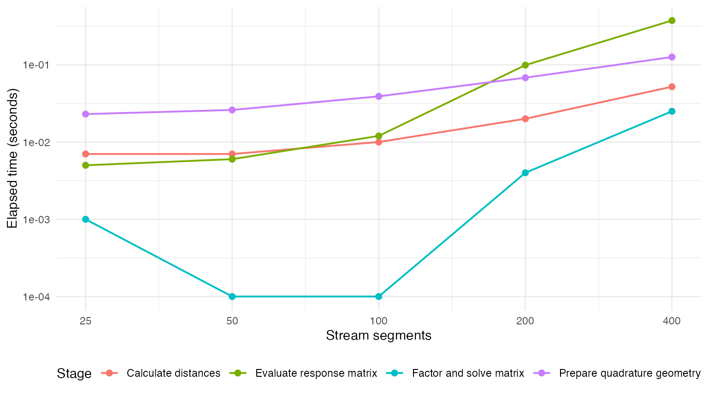
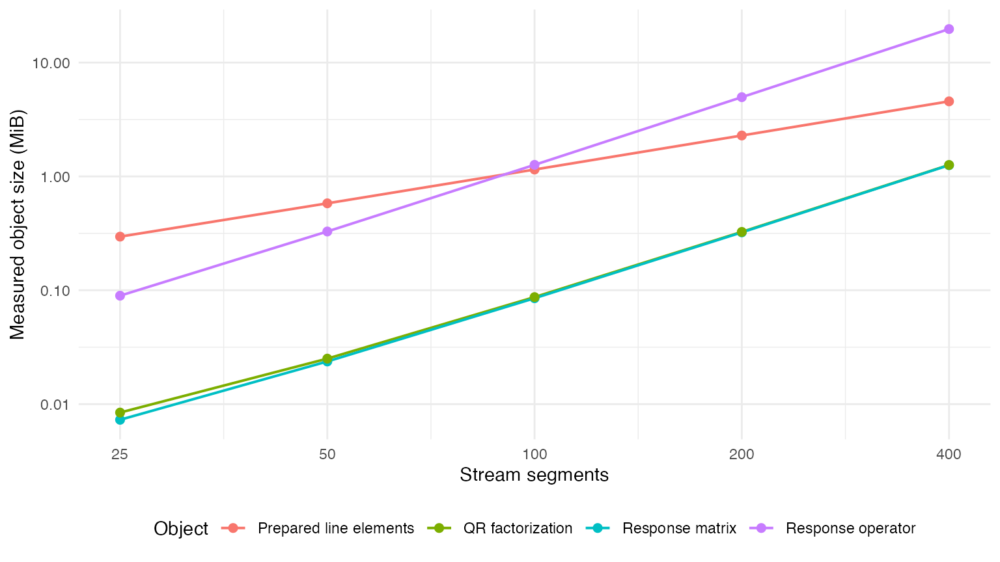

line-sink-performance.Rmd
library(isw)
library(units)
library(tibble)
library(dplyr)
library(tidyr)
library(ggplot2)
library(sf)This article measures how the finite line-sink implementation scales as the number of stream segments increases. It focuses on the core operations used by the constant-head method:
The code and results are visible so the segment counts, quadrature order, and model parameters can be changed and rerun. Elapsed times are specific to the computer running the article; memory dimensions and asymptotic relationships are platform-independent.
Let be the number of stream segments, the number of observation targets, the quadrature order, and the average number of straight edges per segment.
For ordinary observation-well calculations, the stored distance matrix has entries. For the constant-head calculation, every segment midpoint is a target, so and the distance matrix has entries. The aggregated response matrix has entries, and its dense QR factorization requires approximately cubic work in .
The table below shows the raw numeric storage implied by these dimensions for single-edge segments at the default quadrature order. Actual R objects are larger because they also carry units, geometry, dimensions, and other metadata.
quadrature_order <- 16L
theoretical_segment_counts <- c(100L, 250L, 500L, 1000L, 2000L)
theoretical_memory <- tibble(
segments = theoretical_segment_counts,
distance_values = quadrature_order * segments^2,
distance_matrix_mib = 8 * distance_values / 1024^2,
response_matrix_mib = 8 * segments^2 / 1024^2
) |>
mutate(across(
c(distance_matrix_mib, response_matrix_mib),
~ round(.x, 2)
))
knitr::kable(theoretical_memory)| segments | distance_values | distance_matrix_mib | response_matrix_mib |
|---|---|---|---|
| 100 | 1.6e+05 | 1.22 | 0.08 |
| 250 | 1.0e+06 | 7.63 | 0.48 |
| 500 | 4.0e+06 | 30.52 | 1.91 |
| 1000 | 1.6e+07 | 122.07 | 7.63 |
| 2000 | 6.4e+07 | 488.28 | 30.52 |
The benchmark uses one straight reach divided into equal 100 m segments. Each segment therefore has one edge and 16 quadrature points. Its midpoint is used as the constant-head collocation target. The hydraulic parameters remain fixed across sizes.
The benchmark isolates one response matrix and one right-hand side. A complete schedule can reuse response matrices and QR factorizations for repeated elapsed times, but it may also evaluate additional matrices for historical injection pulses. Consequently, these measurements describe the core cost rather than a universal runtime for every schedule.
The Theis response uses the exponential integral
.
The implementation does not call expint() when the
dimensionless argument
is greater than 700; it assigns a response of zero directly. At that
threshold,
is approximately
,
so the omitted response is negligible at ordinary model precision. This
also avoids numerical underflow warnings and saves the special-function
calculation for distant source–target pairs or very short elapsed times.
The shortcut is applied while evaluating response matrices, after
distances and elapsed times are known.
The live benchmark stops at 400 segments so the article remains
practical to rerun interactively. The theoretical memory table extends
to 2,000 segments. Larger measured cases can be explored by editing
segment_counts, with runtime and memory requirements
depending on the computer.
segment_counts <- c(25L, 50L, 100L, 200L, 400L)
segment_length_m <- 100
K <- set_units(10, "m/day")
D <- set_units(20, "m")
V <- 0.15
elapsed_time <- set_units(10, "day")
object_mib <- function(x) {
as.numeric(object.size(x)) / 1024^2
}
elapsed <- function(expression) {
gc()
unname(system.time(force(expression))[["elapsed"]])
}
benchmark_segment_count <- function(number_of_segments) {
stream_reach <- st_sf(
reach_id = "benchmark_reach",
geometry = st_sfc(
st_linestring(matrix(
c(
0, 0,
number_of_segments * segment_length_m, 0
),
ncol = 2,
byrow = TRUE
)),
crs = 32615
)
)
stream_segments <- prep_stream_segments(
stream_reach,
reach_spacing = set_units(segment_length_m, "m")
)
stopifnot(nrow(stream_segments) == number_of_segments)
collocation_targets <- st_sf(
reach_segment_id = stream_segments$reach_segment_id,
geometry = stream_segments$model_point
)
prepare_seconds <- elapsed({
line_elements <- isw:::.prepare_line_elements(
stream_segments,
quadrature_order = quadrature_order
)
})
distance_seconds <- elapsed({
response_operator <- isw:::.prepare_line_response_operator(
collocation_targets,
line_elements
)
})
response_seconds <- elapsed({
response_matrix <- isw:::.evaluate_line_response_operator(
response_operator,
K = K,
D = D,
V = V,
elapsed_time = elapsed_time
)
})
factor_and_solve_seconds <- elapsed({
response_qr <- qr(response_matrix)
condition_number <- kappa(response_qr, exact = FALSE)
solved_rates <- qr.coef(
response_qr,
matrix(1, nrow = number_of_segments, ncol = 1)
)
})
stopifnot(
all(is.finite(response_matrix)),
all(is.finite(solved_rates)),
is.finite(condition_number)
)
tibble(
segments = number_of_segments,
quadrature_points = nrow(line_elements$quadrature_points),
distance_values = length(response_operator$distances),
prepare_seconds,
distance_seconds,
response_seconds,
factor_and_solve_seconds,
line_elements_mib = object_mib(line_elements),
response_operator_mib = object_mib(response_operator),
response_matrix_mib = object_mib(response_matrix),
qr_factorization_mib = object_mib(response_qr),
matrix_condition_number = condition_number
)
}Each size is run once because the larger operations are deterministic and the purpose is to expose approximate scaling, not to compare small timing differences between competing implementations. Rerunning the article provides a fresh measurement on the current machine.
benchmark_results |>
select(
segments,
quadrature_points,
prepare_seconds,
distance_seconds,
response_seconds,
factor_and_solve_seconds
) |>
mutate(across(ends_with("seconds"), ~ signif(.x, 4))) |>
knitr::kable()| segments | quadrature_points | prepare_seconds | distance_seconds | response_seconds | factor_and_solve_seconds |
|---|---|---|---|---|---|
| 25 | 400 | 0.023 | 0.007 | 0.005 | 0.001 |
| 50 | 800 | 0.026 | 0.007 | 0.006 | 0.000 |
| 100 | 1600 | 0.039 | 0.010 | 0.012 | 0.000 |
| 200 | 3200 | 0.068 | 0.020 | 0.099 | 0.004 |
| 400 | 6400 | 0.126 | 0.052 | 0.374 | 0.025 |
timing_long <- benchmark_results |>
select(segments, ends_with("seconds")) |>
pivot_longer(
-segments,
names_to = "stage",
values_to = "seconds"
) |>
mutate(
stage = recode(
stage,
prepare_seconds = "Prepare quadrature geometry",
distance_seconds = "Calculate distances",
response_seconds = "Evaluate response matrix",
factor_and_solve_seconds = "Factor and solve matrix"
)
)
ggplot(
timing_long,
aes(
x = segments,
y = pmax(seconds, 1e-4),
color = stage
)
) +
geom_line(linewidth = 0.7) +
geom_point(size = 2) +
scale_x_log10(breaks = segment_counts) +
scale_y_log10() +
labs(
x = "Stream segments",
y = "Elapsed time (seconds)",
color = "Stage"
) +
theme_minimal() +
theme(legend.position = "bottom")
The response-operator size includes the target-to-quadrature distance matrix and the vectors needed to aggregate quadrature points back to source segments. The objects in this table coexist during a constant-head solve, although R may temporarily allocate additional copies while calculating responses and matrix factorizations.
benchmark_results |>
select(
segments,
distance_values,
line_elements_mib,
response_operator_mib,
response_matrix_mib,
qr_factorization_mib
) |>
mutate(across(ends_with("mib"), ~ round(.x, 3))) |>
knitr::kable()| segments | distance_values | line_elements_mib | response_operator_mib | response_matrix_mib | qr_factorization_mib |
|---|---|---|---|---|---|
| 25 | 10000 | 0.296 | 0.090 | 0.007 | 0.008 |
| 50 | 40000 | 0.580 | 0.328 | 0.024 | 0.025 |
| 100 | 160000 | 1.149 | 1.263 | 0.085 | 0.087 |
| 200 | 640000 | 2.287 | 4.964 | 0.322 | 0.326 |
| 400 | 2560000 | 4.562 | 19.690 | 1.255 | 1.260 |
memory_long <- benchmark_results |>
select(segments, ends_with("mib")) |>
pivot_longer(
-segments,
names_to = "object",
values_to = "mib"
) |>
mutate(
object = recode(
object,
line_elements_mib = "Prepared line elements",
response_operator_mib = "Response operator",
response_matrix_mib = "Response matrix",
qr_factorization_mib = "QR factorization"
)
)
ggplot(
memory_long,
aes(x = segments, y = mib, color = object)
) +
geom_line(linewidth = 0.7) +
geom_point(size = 2) +
scale_x_log10(breaks = segment_counts) +
scale_y_log10() +
labs(
x = "Stream segments",
y = "Measured object size (MiB)",
color = "Object"
) +
theme_minimal() +
theme(legend.position = "bottom")
Matrix conditioning is a property of the geometry, hydraulic parameters, elapsed time, and segment discretization. It is shown separately because a large condition number is a numerical-stability warning rather than a direct measure of computational cost.
benchmark_results |>
transmute(
segments,
matrix_condition_number = signif(matrix_condition_number, 6)
) |>
knitr::kable()| segments | matrix_condition_number |
|---|---|
| 25 | 3.61248 |
| 50 | 3.63677 |
| 100 | 3.64869 |
| 200 | 3.65460 |
| 400 | 3.65753 |
The distance operator and response evaluation grow quadratically for the constant-head geometry, while dense factorization eventually grows cubically. The measured tables show when those costs become material on the machine used for analysis. They can be used to decide whether the current implementation is adequate for expected networks, whether quadrature construction should be optimized, or whether a practical segment-count warning should be documented.